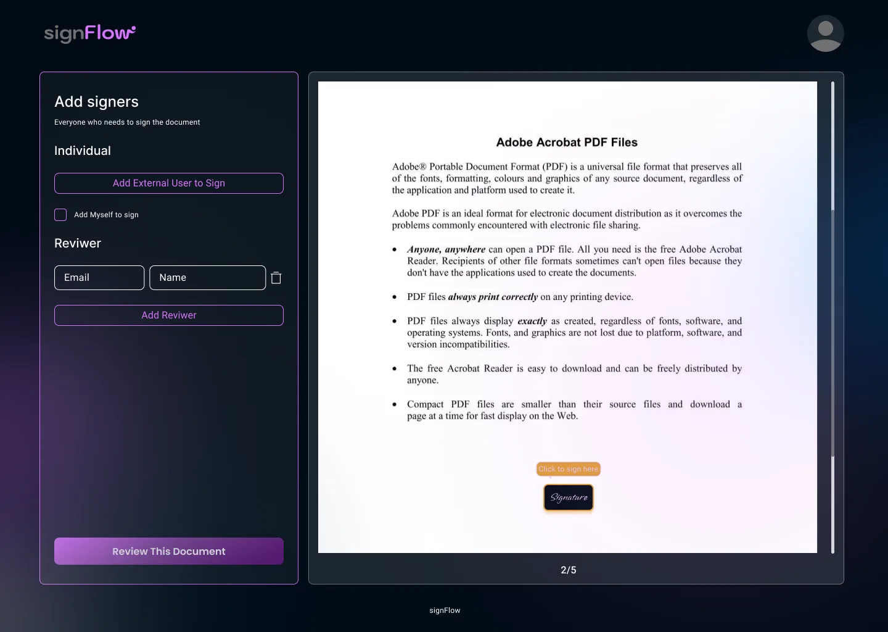

01Send
Decide who signs and who only reviews
After the upload, the sender lists who needs to act. Each person is either a signer or a reviewer, and the difference is explicit: reviewers approve the content, signers make it binding. External emails go in the same way as internal ones.
